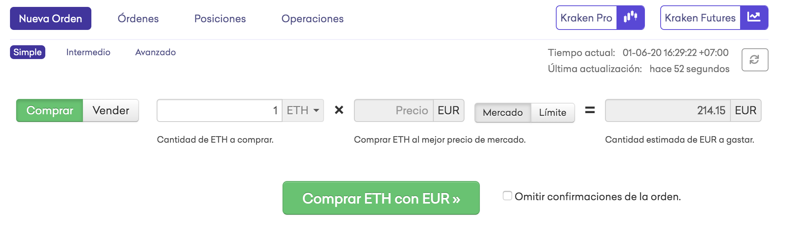

¿Cómo comprar criptomonedas?¶
Contenido de este tutorial:
Casas de cambio de criptomonedas o "Exchanges"¶
Las criptomonedas se adquieren de dos maneras:
-
Minando: Ayudando a asegurar la blockchain con programas especializados
-
Por transferencia: alguien nos lo envía (como una transferencia bancaria)
La opción uno, minando, está generalmente muy profesionalizada y un usuario normal es incapaz de hacerlo por si solo sin invertir decenas o centenares de miles de euros o dólares en equipo.
Para la opcion dos, lo más fácil es "comprar" estas criptomonedas para que nos las envíen a nuestra dirección y cartera.
Para facilitar la compra y venta de criptomonedas, existen servicios especializados llamados "Exchanges" o "Casas de cambio de criptomonedas" que no difieren mucho de una casa de cambio donde puedes cambiar dólares americanos por yenes japoneses o wons koreanos por euros.
Uno de los más famosos y seguros es Kraken, y con él vamos a hacer el siguiente tutorial.
1. Registrándonos en Kraken¶
Entramos en Kraken.com (si os registráis a traves de este link, Kraken me da una pequeña comisión que me ayuda a mantener Mundo Descentralizado).
Cambiar el idioma¶
Si no nos sentimos cómodos con el inglés, bajamos abajo hasta el final de la página y tendremos un menú con el que cambiar el idioma:
Luego subimos otra vez arriba y pulsamos "Crear una cuenta"
Paso 1: E-mail, Usuario y Password¶
Paso 2: Confirmar e-mail¶
Nos van a enviar un correo al e-mail que hemos introducido. En este correo habrá un link que podemos simplemente pulsar y continuar en la nueva pestaña - o copiar el código que nos han enviado en el correo en la pestaña donde hemos empezado el proceso
Y llegamos a la página de confirmación!
2. Verificación¶
Pero para poder comprar criptomonedas, tendremos que verificar nuestra identidad. Como Kraken es un sistema custodio que guardará dinero en nuestro nombre, tiene que cumplir con regulaciones de KYC (Know Your Customer) y Anti-blanqueo de dinero como cualquier banco.
Hay 3 niveles de verificación:
-
Básico (en el que cualquier usuario está después del registro): Te permite depositar criptomonedas e intercambiarlas por otras.
-
Intermedio: Nos permite depositar divisas de curso legal (fiat) para comprar criptomonedas. ¡Este es el que queremos!
-
Pro: Para mover grandes volúmenes, con límites de transacción y depósito más altos.
Seleccionamos "Intermedio" y seguimos rellenando todos los campos:

Luego nos van a pedir la documentación correspondiente, dependiendo del país donde residamos.
Es posible que despues de esto tengamos que esperar a que un operario de Kraken verifique la documentación, o incluso que nos pidan más documentos. Es imposible estimar cuanto tiempo este proceso puede tardar, pero cuando nos hayan verificado podremos seguir a comprar cripto!
3. Enviando fondos¶
Lo siguiente que queremos hacer es poner dinero en nuestra cuenta para poder comprar criptomonedas.
En la barra superior iremos a la sección de "Fondos" y en la página correspondiente elegiremos la divisa que queramos ingresar.
En la siguiente página elegiremos el tipo de transferencia que queremos hacer. Una transferencia SEPA europea será gratis, mientras que otros tipos tendran sus diferentes comisiones.
En esta página apareceran los datos de la cuenta a la que tenemos que enviar la transferencia.
¡Muy importante!
Hay que poner el número de referencia que nos proporciona Kraken, incluyendo "kraken.com" al final. Si nuestro banco no nos deja poner un punto ".", puede funcionar con un espacio: "kraken com". Esto es para que kraken pueda detectar automáticamente nuestro ingreso y el proceso sea más rápido.
4. ¡A comprar criptomonedas!¶
Una vez los fondos hayan llegado a la cuenta, sólo nos queda comprar criptomonedas con ellos.
Para aquellos que no han operado nunca en una casa de cambio de criptomonedas, esto puede ser confuso, pero no hay nada que temer si seguimos las instrucciones que siguen:
En el menú de la barra superior vamos a "Operar".
Seguidamente, veremos un desplegable con la lista de todas las monedas, cripto y fiat, que podemos intercambiar. En este caso, como tenemos Euros en la cuenta, vamos a "EUR" para desplegar todas las parejas que podemos hacer con el Euro.
Aquí cualquiera puede elegir la criptomoneda que quiere comprar: Bitcoin es XBT, y Ethereum es ETH. Para este ejemplo vamos a utilizar ETH (¡esto no es ningún consejo de inversión!)
Una vez estemos en la pareja que queremos (ETH/EUR en este caso) veremos que hay varias opciones. Para una primera compra, en la pestaña "Nueva Orden", recomiendo dejar los parámetros a "Simple" y seleccionar la opción "Mercado" para comprar criptomonedas al precio de mercado.
Ahora solo hay que elegir cuanto ETH queremos comprar e introducir esta cantidad en la casilla correspondiente. Si hemos seleccionado la opción "Mercado" nos saldrá una estimación del precio en EUR. Si no sabemos exactamente cuanto queremos comprar, o queremos comprar una cantidad concreta en EUR, podemos jugar con el precio que ponemos en la casilla hasta que la estimación de precio sea la que queremos pagar.

Le damos a "Comprar ETH con EUR"...
... esperamos a que el sistema encuentre un vendedor (recordamos que esto es un mercado donde hay gente que compra, como nosotros en este caso, y otra gente en el otro lado del intercambio que esta vendiendo.)...
Y después de confirmar la transacción en la blockchain, ¡tendremos el ETH en nuestra cuenta!
¿Y ahora qué?¶
Si has escuchado nuestro podcast #2 - ¿Quiero ser responsable de mis activos digitales?, o has leído el artículo sobre Carteras y direcciones, sabrás que Kraken es un exchange "custodio" - es decir, guarda tus criptomonedas por tí.
Si quieres guardar estas criptomonedas en tu cartera (visita este tutorial para saber cómo crear tu cartera no custodia), tendrás que ir a la pestaña de "Fondos" en el menú superior, ir a la criptomoneda que acabas de comprar y pulsar "Retirar".
En futuros artículos veremos lo que podemos hacer con el ETH que hemos comprado!